UT4 · Retribución, nóminas, cotización e IRPF
Elabora y controla el proceso retributivo, calculando nóminas, cotización y retenciones con parámetros vigentes y trazabilidad de los datos utilizados.
Criterios de evaluación del RA4
Ejemplos de nóminas cumplimentadas
Lee cada recibo como un documento real: identifica de dónde sale cada importe antes de pasar al laboratorio.
Ejemplo 1 · Nómina ordinaria completa
| I. DEVENGOS | Importe |
|---|---|
| Salario base | 1.500,00 € |
| Complemento de puesto | 200,00 € |
| Comisión | 150,00 € |
| Total devengado (A) | 1.850,00 € |
| II. DEDUCCIONES | |
| Contingencias comunes 4,70 % s/ 2.100 | 98,70 € |
| Desempleo 1,55 % | 32,55 € |
| Formación profesional 0,10 % | 2,10 € |
| MEI 0,13 % | 2,73 € |
| IRPF 12 % s/ 1.850 | 222,00 € |
| Total deducciones (B) | 358,08 € |
| LÍQUIDO A PERCIBIR (A − B) | 1.491,92 € |
| BASES | |
| Prorrata pagas extraordinarias | 250,00 € |
| Base contingencias comunes | 2.100,00 € |
Ejemplo 2 · Nómina con retribución en especie
| DEVENGOS | Importe |
|---|---|
| Retribución dineraria | 1.600,00 € |
| Retribución en especie | 180,00 € |
| Total devengado | 1.780,00 € |
| DEDUCCIONES / AJUSTES | |
| Deducciones dinerarias del supuesto | 205,00 € |
| Valor de especie ya entregada | 180,00 € |
| EFECTIVO A TRANSFERIR | 1.395,00 € |
Ejemplo 3 · Finiquito
| CONCEPTO | Importe |
|---|---|
| Salario pendiente: 1.500 / 30 × 20 | 1.000,00 € |
| Vacaciones pendientes: 1.500 / 30 × 6 | 300,00 € |
| Paga extra: 1.500 × 3 / 6 | 750,00 € |
| TOTAL BRUTO CALCULADO | 2.050,00 € |
13 infografías de nóminas · RA4
Secuencia visual para explicar, practicar y repasar el proceso retributivo completo.
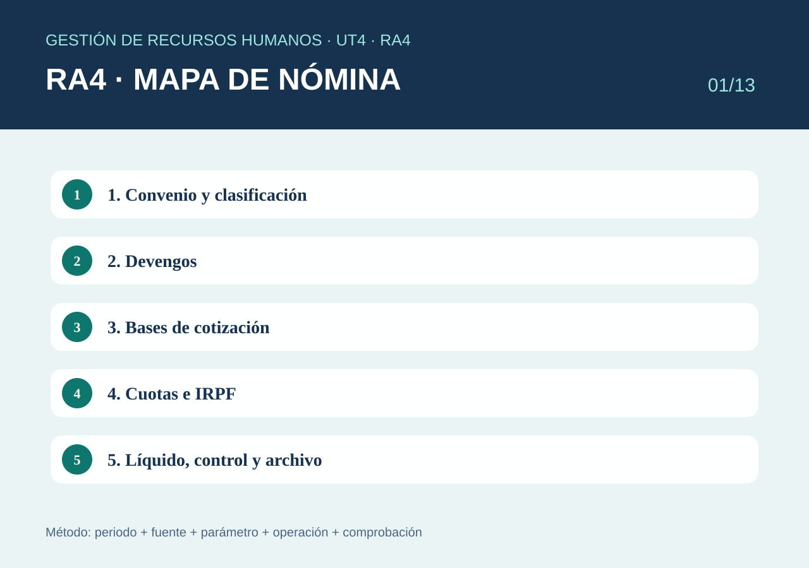
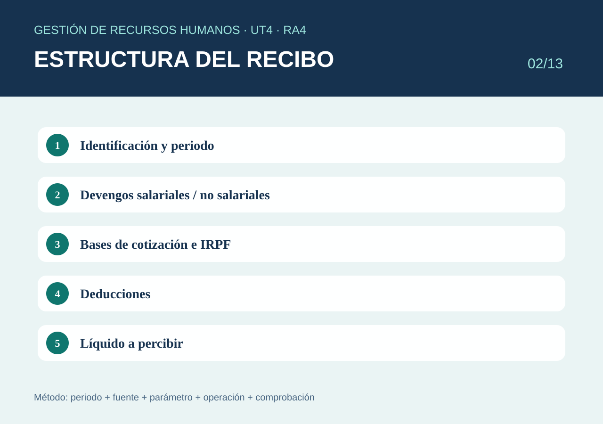
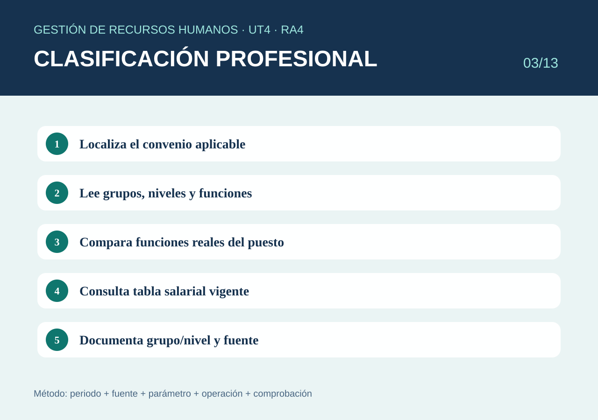
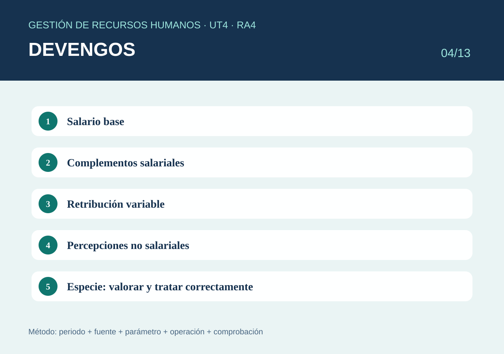
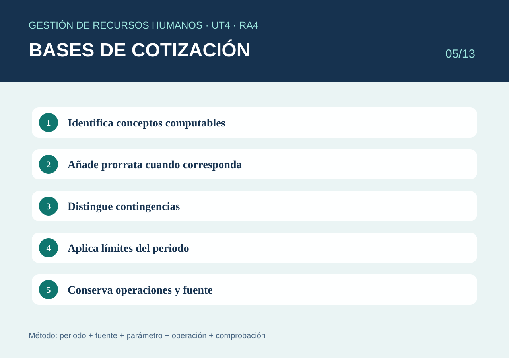
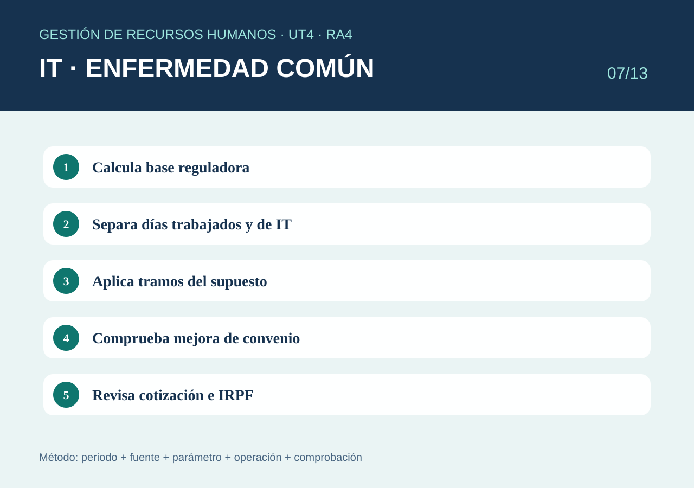
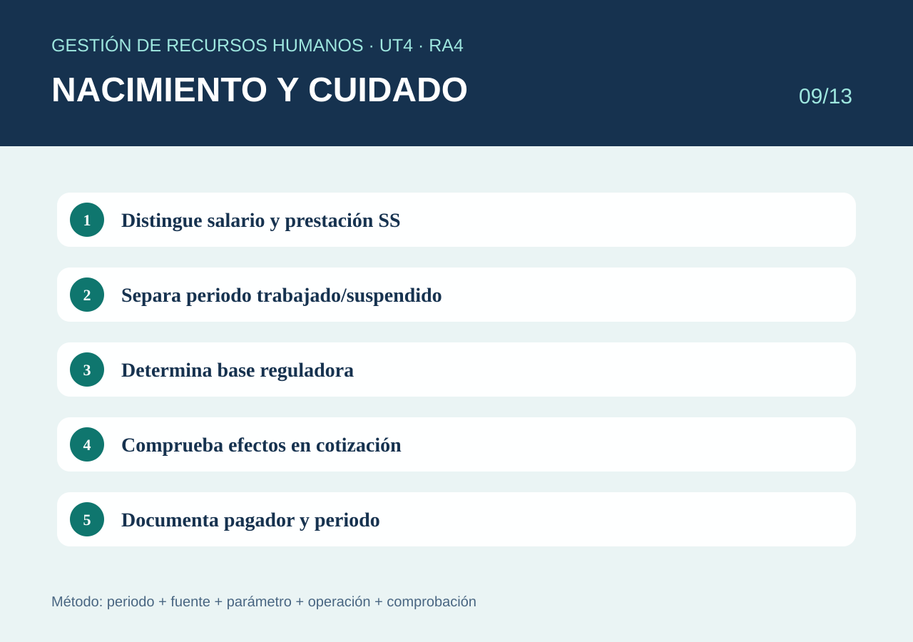
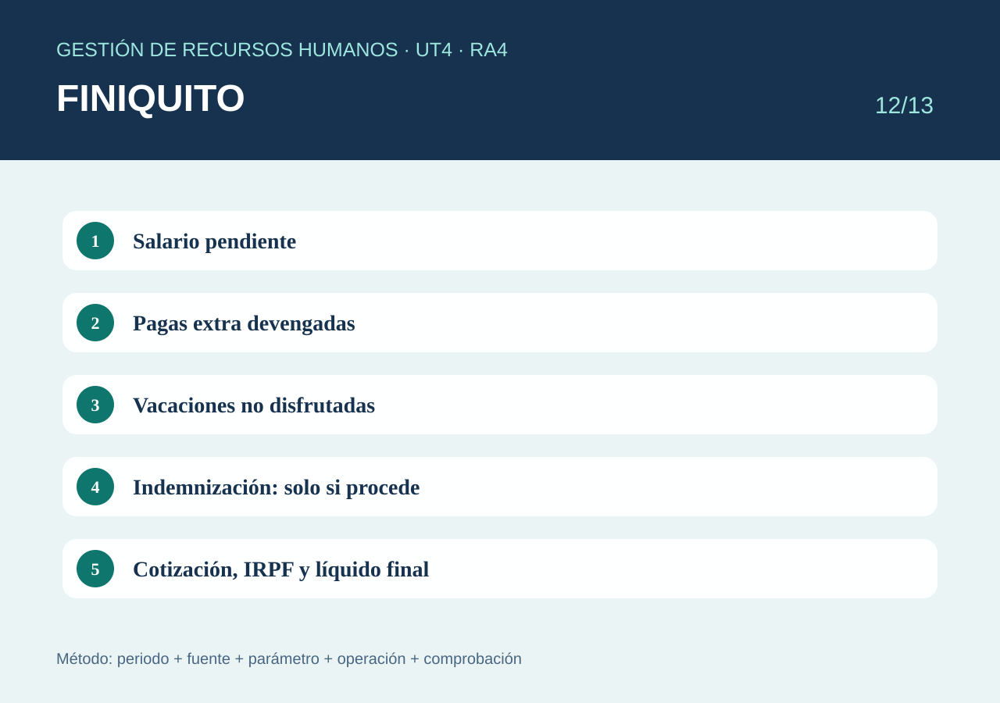
1. Proceso retributivo, convenio y clasificación profesional
La nómina comienza antes de hacer operaciones: hay que identificar el convenio aplicable, la clasificación profesional, la jornada, las condiciones salariales y las incidencias del periodo. La categoría o grupo no debe elegirse solo por el nombre del puesto: se comparan las funciones efectivamente realizadas con el sistema de clasificación y tablas del convenio vigente.
Cómo determinar la clasificación correcta
- Identifica la actividad principal de la empresa y el centro de trabajo.
- Localiza el convenio por ámbito funcional, territorial y vigencia.
- Lee su capítulo de clasificación profesional: grupos, niveles, áreas y factores (responsabilidad, autonomía, conocimientos, mando, complejidad, etc.).
- Describe las funciones reales del puesto y compáralas con las definiciones del convenio.
- Localiza la tabla salarial correspondiente al grupo/nivel y periodo.
- Distingue clasificación profesional del convenio y grupo de cotización: están relacionados, pero no son conceptos intercambiables.
- Documenta convenio, código, vigencia, grupo/nivel y tabla utilizada.
Grupos de cotización: orientación
En el Régimen General se utilizan grupos de cotización asociados a categorías profesionales. Para Administración son especialmente reconocibles, entre otros, el grupo 3 (jefaturas administrativas), 5 (oficiales administrativos) y 7 (auxiliares administrativos). La asignación del caso debe contrastarse con las funciones y la normativa vigente, no hacerse únicamente por el título interno del puesto.
Repositorio de convenios
REGCON · buscador oficial de textos de convenios en Canarias. Permite filtrar por vigencia, naturaleza, ámbito funcional y autoridad laboral.
2. SMI, IPREM y referencias actualizables
SMI e IPREM son referencias distintas y se utiliza la que corresponda al procedimiento. Siempre se anota periodo, norma/fuente y valor empleado.
BOE · Real Decreto 126/2026, SMI 2026
Por qué no son intercambiables
El SMI establece una referencia mínima salarial; el IPREM es un indicador utilizado en determinados límites, ayudas y procedimientos. Que ambos sean importes oficiales no significa que pueda escogerse el que resulte más cómodo. El enunciado o la norma del procedimiento determina cuál corresponde.
Cuando se compara una retribución con el SMI hay que atender a la unidad correcta —día, mes o año— y a la estructura de pagas. Por eso comparar sin más una mensualidad con otra cifra mensual puede producir conclusiones erróneas si una está expresada en 12 pagas y otra en 14.
Ejemplo razonado
Si un salario se expresa en doce mensualidades con extras prorrateadas, primero se obtiene su importe anual y se compara con la referencia anual aplicable. Así se comparan magnitudes equivalentes. El alumno debe escribir siempre: año, fuente, importe utilizado y operación.
Método
- Identifica qué referencia exige el supuesto.
- Fija el año/periodo.
- Consulta la fuente oficial.
- Comprueba si el cálculo requiere importe diario, mensual o anual y el tratamiento de las pagas.
- Guarda la fuente junto al ejercicio.
3. Estructura del recibo de salarios
Una nómina se lee de arriba abajo: identificación y periodo → devengos → bases → deducciones → líquido. Cada bloque responde a una pregunta distinta y debe poder comprobarse por separado.
Leer una nómina como un circuito
Los datos de cabecera explican quién paga, quién cobra y qué periodo se liquida. Los devengos explican qué cantidades se generan. Las bases sirven para determinados cálculos de cotización o fiscales. Las deducciones explican qué importes se descuentan. Finalmente, el líquido indica la cantidad monetaria resultante, pero no demuestra por sí solo que el recibo esté bien calculado.
Una buena revisión se hace por capas. Primero se verifica la ficha laboral y el convenio; después los conceptos e incidencias del mes; a continuación bases y tipos; por último se comprueba la aritmética. Si se empieza únicamente por el líquido, un error puede quedar compensado accidentalmente por otro.
Ejemplo completo básico
Datos: salario base 1.500 €, complemento de puesto 200 €, comisión 150 €. Deducciones del supuesto: Seguridad Social 125 €, IRPF 185 € y anticipo 100 €.
| Devengos | 1.500 + 200 + 150 = 1.850 € |
|---|---|
| Deducciones | 125 + 185 + 100 = 410 € |
| Líquido | 1.850 − 410 = 1.440 € |
Este cálculo permite comprobar el líquido, pero todavía no demuestra que las bases o deducciones sean correctas: deben verificarse con sus reglas propias.
Control documental
- Empresa y trabajador correctamente identificados.
- Periodo de liquidación.
- Conceptos separados y denominados de forma comprensible.
- Bases y tipos utilizados.
- Total devengado, total deducciones y líquido aritméticamente coherentes.
4. Devengos salariales y no salariales
Primero se pregunta qué retribuye o compensa cada concepto. El nombre usado por la empresa no basta para decidir su tratamiento.
La denominación del concepto no decide su naturaleza
Para clasificar una percepción hay que saber qué remunera o compensa. El salario base y los complementos retribuyen trabajo en los términos establecidos; otras cantidades pueden compensar gastos o responder a causas distintas. La clasificación influye en cotización, fiscalidad y cálculo de otros derechos, de modo que cambiar el nombre en el programa no cambia automáticamente su tratamiento jurídico.
En los complementos conviene identificar su causa: condiciones personales, puesto, cantidad o calidad del trabajo, resultados u otra circunstancia prevista. También se revisa si son consolidables o si dependen de mantener la situación que los origina.
Ejemplo razonado
Dos conceptos se llaman «plus». Uno retribuye responsabilidad permanente y otro compensa un gasto acreditado de desplazamiento. El nombre común no permite aplicar la misma regla. El alumno debe leer convenio, causa y justificantes antes de decidir cómo tratar cada importe.
Ejemplo clasificado
| Concepto | Importe | Lectura inicial |
|---|---|---|
| Salario base | 1.450 € | Salarial |
| Complemento de responsabilidad | 180 € | Salarial; comprobar convenio/acuerdo |
| Comisión | 220 € | Salarial variable |
| Gasto de desplazamiento justificado | 70 € | Analizar como percepción compensatoria/no salarial y sus requisitos |
Total mostrado como devengado: 1.450 + 180 + 220 + 70 = 1.920 €. Después se determina qué parte computa en cada base conforme a la regulación vigente.
Retribución en especie
Si además existe una percepción en especie valorada en 160 €, debe figurar y recibir su tratamiento de cotización y fiscalidad. 160 € de valoración no significa necesariamente 160 € adicionales transferidos a la cuenta bancaria.
5. Deducciones
Las deducciones no se aplican todas sobre la misma referencia. Las cuotas del trabajador parten de bases de cotización; la retención fiscal utiliza su base y tipo correspondientes; anticipos u otras deducciones requieren causa y soporte.
Deducir exige justificar
Una deducción reduce el importe que finalmente recibe la persona, pero cada descuento necesita su propia base jurídica y de cálculo. Las aportaciones a Seguridad Social responden a bases y tipos; la retención de IRPF sigue el procedimiento tributario; un anticipo refleja una cantidad que ya se entregó; otras deducciones requieren analizar su causa.
Por eso el alumno debe construir una tabla con cuatro columnas: concepto, base o importe de origen, regla aplicada y resultado. Este formato hace visible si se está aplicando un porcentaje a la magnitud equivocada.
Ejemplo de control
Si el recibo muestra una retención de 240 €, no basta comprobar que 240 aparece restado. Hay que poder identificar la base sometida a retención y el tipo utilizado. De igual modo, las cuotas de Seguridad Social se contrastan con sus bases, no con el líquido.
Ejemplo explicado
Total devengado: 2.200 €. El supuesto facilita: cuotas del trabajador 145 €, retención IRPF 264 € y anticipo 150 €.
- Cuotas SS: 145 €.
- IRPF: 264 €.
- Anticipo ya percibido: 150 €.
- Total deducciones = 145 + 264 + 150 = 559 €.
- Líquido = 2.200 − 559 = 1.641 €.
Incidencias
Huelga, ausencia injustificada y permiso no retribuido no son sinónimos. Antes de reducir importes se identifica duración, conceptos afectados y regla legal o convencional aplicable.
6. Bases de cotización
La base no se obtiene copiando el total devengado. Se identifican conceptos computables, prorrata de pagas extraordinarias cuando proceda y límites correspondientes al periodo.
Construcción de la base: piensa por capas
Primero identifica las percepciones del periodo y clasifícalas. Después determina cuáles se integran en la base y en qué cuantía. A continuación incorpora la prorrata de pagas cuando corresponda y aplica las reglas especiales del supuesto. Finalmente contrasta límites vigentes. Este orden evita intentar recordar una fórmula única para todas las nóminas.
Las bases para distintas contingencias pueden compartir elementos, pero no deben suponerse idénticas sin comprobarlo. Horas extraordinarias, determinadas situaciones de incapacidad o particularidades contractuales obligan a detenerse y aplicar la regla concreta.
Comprobación inversa
Una técnica útil consiste en tomar la base calculada y explicar qué conceptos la forman. Si aparece un importe que no puedes vincular a un concepto o prorrata, probablemente hay un error. Esta comprobación es especialmente útil en hojas de cálculo.
Ejemplo didáctico de BCC
Salario base 1.500 €, complemento salarial 200 € y dos pagas extraordinarias anuales de 1.500 € cada una, no prorrateadas en el cobro.
- Prorrata mensual para cotización: (1.500 × 2) / 12 = 250 €.
- Conceptos salariales mensuales computables del supuesto: 1.500 + 200 = 1.700 €.
- BCC previa a comprobación de límites: 1.700 + 250 = 1.950 €.
- Comprobar bases mínima/máxima y reglas vigentes del periodo antes de cerrar.
Horas extraordinarias y contingencias profesionales
Cuando el supuesto incluye horas extraordinarias o una IT derivada de AT/EP, no debe reutilizarse automáticamente la misma operación que para contingencias comunes. Se separan los elementos exigidos por la regla aplicable.
Consultar bases, tipos y reglas vigentes en Seguridad Social.
7. Cuotas de Seguridad Social
Las cuotas se calculan aplicando a cada base el tipo que corresponda al periodo y contingencia. Deben distinguirse aportación de la persona trabajadora y aportación empresarial.
Empresa y trabajador no soportan la misma cuota
En la nómina aparecen determinadas aportaciones de la persona trabajadora como deducciones. La empresa, además, soporta sus propias aportaciones. Por ello el coste laboral empresarial y el líquido de la nómina responden a preguntas diferentes. El alumno debe mantener separados ambos planos.
Para cada concepto de cotización se anota base, tipo, sujeto que soporta la cuota y resultado. Después se suman las partidas correspondientes. Esta tabla evita aplicar por error un tipo empresarial como deducción del trabajador o viceversa.
Ejemplo de lectura
Si un ejercicio facilita BCC y una base para contingencias profesionales, no se elige una al azar. Se observa qué contingencia se está calculando y se aplica su tipo sobre la base indicada por la regla. Al cambiar el año se revisan nuevamente tipos y parámetros.
Ejemplo de cálculo
Supuesto didáctico: BCC = 2.000 €. El ejercicio facilita un tipo del trabajador del 4,70 % para contingencias comunes.
2.000 × 4,70 % = 94 €.
Si el ejercicio incorpora desempleo, formación profesional, MEI u otros conceptos, cada uno se calcula sobre su base y con el tipo que indique la normativa del periodo. Después se suman únicamente las aportaciones que correspondan al trabajador para obtener su deducción de Seguridad Social.
8. Retención e ingreso a cuenta de IRPF
La retención es un pago a cuenta. El porcentaje no se elige “a ojo”: depende de los datos y del procedimiento vigente. En clase podemos facilitar un tipo para practicar la mecánica; en gestión real se utiliza el procedimiento oficial.
Retener no significa fijar el impuesto definitivo
La empresa practica pagos a cuenta según el procedimiento aplicable. El tipo puede cambiar cuando cambian circunstancias relevantes o la retribución prevista, por lo que RR. HH. debe conservar los datos y regularizaciones que justifican el porcentaje utilizado. El trabajador no escoge libremente cualquier porcentaje como sustituto del procedimiento.
En ejercicios iniciales puede proporcionarse directamente una base y un tipo para practicar la operación. En ejercicios avanzados el alumno debe identificar qué percepciones están sometidas, qué datos personales o contractuales intervienen y cuándo procede revisar el cálculo.
Ejemplo de razonamiento
Dos trabajadores con el mismo salario bruto pueden no presentar necesariamente la misma retención si sus circunstancias relevantes son distintas. Por eso copiar el porcentaje de un compañero o de la nómina anterior sin comprobar cambios no es un método válido.
Ejemplo didáctico
Base sometida a retención del supuesto: 1.850 €. Tipo facilitado: 12 %.
Retención = 1.850 × 12 % = 222 €.
Retribución en especie
Cuando existe especie se determina su valoración y se analiza el ingreso a cuenta y su tratamiento fiscal. No debe confundirse el valor fiscal/retributivo con dinero efectivamente transferido.
Control
- Datos personales/familiares y contractuales correctamente comunicados.
- Retribución prevista y regularizaciones, cuando procedan.
- Tipo obtenido o facilitado para el periodo.
- Base sobre la que se aplica.
- Registro del cálculo y de las modificaciones.
9. Supuestos de nómina resueltos
En todos los casos: incidencia → periodo → devengos/prestación → bases → cuotas/IRPF → líquido → control.
A. IT por enfermedad común
Trabajador mensual. BCC del mes anterior: 1.800 €. Baja del día 10 al 30. Para el ejemplo, BR diaria = 1.800 / 30 = 60 €. Sin mejora de convenio.
- Días 1–3 de IT: sin prestación en el esquema general del ejemplo.
- Días 4–20: 17 días × (60 × 60 %) = 17 × 36 = 612 €.
- Día 21 del proceso: 1 día × (60 × 75 %) = 45 €.
- Prestación del periodo de IT del ejemplo: 657 €.
Después se añaden los días trabajados y se calculan bases, cuotas e IRPF según las reglas del periodo. Si el convenio mejora la prestación, el complemento empresarial se calcula y muestra separadamente.
B. IT por accidente de trabajo / enfermedad profesional
BCP del mes anterior sin horas extra: 1.950 €. Horas extraordinarias de los 12 meses anteriores: 600 €. Mes anterior de 30 días.
- Parte ordinaria: 1.950 / 30 = 65 €/día.
- Promedio diario de horas extra: 600 / 365 = 1,64 €/día.
- BR didáctica: 65 + 1,64 = 66,64 €/día.
- Prestación desde el día siguiente, al 75 % en el supuesto: 66,64 × 75 % = 49,98 €/día.
El día del accidente y las reglas de cotización deben tratarse conforme al caso; no se aplican los tramos de enfermedad común.
C. Nacimiento y cuidado de menor
Si la suspensión comienza a mitad de mes, se separa el periodo trabajado del suspendido. La empresa liquida el salario correspondiente al trabajo y la prestación de Seguridad Social se trata como prestación, no como salario ordinario añadido por la empresa. El alumno debe identificar BR, pagador, días y efectos en cotización/documentación.
D. Retribución en especie
Salario dinerario 1.600 € + especie valorada en 180 €. Secuencia: valorar la especie → comprobar límites → determinar tratamiento de cotización → tratamiento fiscal/ingreso a cuenta → reflejar devengos → calcular deducciones → obtener el efectivo. El bruto retributivo y el dinero transferido no son la misma magnitud.
E. Finiquito
Extinción el día 20. Salario mensual 1.500 €. Dos pagas extra de 1.500 € no prorrateadas. Quedan 6 días de vacaciones devengadas y no disfrutadas. Para practicar, usamos mes de 30 días.
- Salario pendiente: 1.500 / 30 × 20 = 1.000 €.
- Pagas extra: calcular por separado lo devengado de cada paga según su periodo real de devengo.
- Vacaciones: 1.500 / 30 × 6 = 300 € en esta simplificación didáctica.
- Indemnización: solo si corresponde; primero se identifica causa de extinción y después su regla.
- Finalmente se determina cotización, retención y líquido de los conceptos según su tratamiento.
10. Liquidación, presentación y rectificaciones
La nómina calculada debe convertirse en un proceso cerrado y trazable: pago, cotización, obligaciones fiscales cuando correspondan, presentación y conservación de justificantes.
Flujo mensual de trabajo
- Abrir periodo: comprobar altas/bajas, contratos, jornada, convenio y parámetros vigentes.
- Registrar incidencias: IT, variables, horas, ausencias, anticipos, especie y cambios comunicados.
- Calcular: devengos, bases, cuotas, retención y líquido.
- Revisar: comparar con mes anterior y explicar variaciones relevantes.
- Cerrar y pagar: generar recibos y orden/soporte de pago conforme al procedimiento.
- Cotizar y presentar: utilizar los servicios y ficheros/procedimientos vigentes de Seguridad Social.
- Archivar: conservar recibos, respuestas, referencias y justificantes vinculados al periodo.
Sistema RED / SILTRA
En el entorno profesional la comunicación con la Tesorería se realiza mediante los servicios habilitados del Sistema RED y, cuando corresponda al procedimiento, SILTRA. El alumno debe entender el circuito generación → envío → respuesta → corrección → confirmación/justificante, no memorizar pantallas que pueden cambiar.
Seguridad Social · Sistema RED
Si aparece un error después del cierre
No se oculta ni se “arregla” cambiando únicamente el líquido. Se identifica trabajador, periodo, dato erróneo y documentos afectados; se determina el procedimiento de rectificación/regularización vigente, se ejecuta y se conserva la evidencia de la corrección.
Conciliación antes de cerrar
Antes de dar por finalizado el periodo se comparan tres niveles: detalle por trabajador, resumen de nóminas y obligaciones externas. Los totales de bases y cuotas deben ser compatibles con lo comunicado a Seguridad Social; las retenciones deben poder relacionarse con la información fiscal; y el importe destinado al pago debe reconciliarse con los líquidos. Esta revisión detecta errores que una nómina individual aparentemente correcta puede ocultar.
Ejemplo. El resumen de nóminas muestra diez trabajadores, pero la liquidación incluye once. Antes de confirmar, RR. HH. revisa altas, bajas y periodos: puede existir una persona dada de baja que todavía genera cotización por parte del periodo, o puede tratarse de un movimiento incorrecto. La diferencia se explica, no se fuerza.
Rectificar con trazabilidad
Una rectificación debe conservar qué dato era incorrecto, cuál es el correcto, quién autorizó el cambio, qué documentos se regeneraron y qué comunicaciones externas se repitieron o regularizaron. La versión original no se borra de forma que resulte imposible reconstruir el incidente.
11. Software de nóminas, registro y archivo
El programa automatiza operaciones, pero no decide si los datos de entrada son correctos. El técnico debe ser capaz de explicar por qué una nómina produce un resultado concreto.
Configuración inicial
- Empresa, centros, cuentas y datos administrativos.
- Convenio, clasificación, conceptos y condiciones retributivas.
- Trabajadores, contratos, jornadas y situaciones.
- Parámetros legales con fecha de vigencia.
- Permisos de usuario y perfiles de acceso.
Ciclo de una nómina en software
- Crear/abrir el periodo.
- Importar o registrar incidencias.
- Revisar registros rechazados.
- Calcular borradores.
- Comparar una muestra con cálculo manual.
- Revisar variaciones y errores.
- Cerrar solo después de conciliar.
- Generar documentos, ficheros y exportación contable.
- Guardar justificantes y copia de seguridad.
Ejemplo de control
Se importan 50 incidencias y el programa acepta 48. El proceso no está completo: hay que localizar las dos rechazadas, corregirlas o justificar por qué no proceden y volver a conciliar antes del cierre.
Discrepancia programa / cálculo manual
Se comparan, en este orden: datos del trabajador → conceptos → incidencias → bases → tipos → redondeos → versión/fecha de parámetros. Nunca se modifica una cifra únicamente para hacerla coincidir.
Seguridad y archivo
Antes de actualizaciones o migraciones se realiza una copia verificable y se conoce el procedimiento de restauración. El acceso a nóminas y datos personales se limita a perfiles autorizados. Las versiones cerradas, rectificaciones, exportaciones y justificantes deben conservar relación con trabajador y periodo.
Conciliación contable
Antes de importar el asiento, los totales de la exportación contable deben coincidir con los resúmenes de nómina y cuentas previstas. Una diferencia se investiga antes de contabilizar.
Validaciones que el software no puede decidir por ti
Un programa puede avisar de campos vacíos o aplicar fórmulas, pero no sabe por sí mismo si el convenio seleccionado corresponde a la actividad real, si una incidencia está correctamente clasificada o si la causa de una percepción es salarial. El técnico aporta el criterio y utiliza la aplicación como herramienta de cálculo y control.
Por eso, antes de procesar una nómina nueva, conviene comparar la ficha con documentos de origen: contrato, convenio, comunicación de cambio salarial, parte de incidencia o autorización. La pantalla no debe convertirse en la fuente primaria de un dato que procede de un documento.
Prueba de restauración
Una copia de seguridad solo es útil si puede recuperarse. Periódicamente debe comprobarse que el archivo es legible y que existe un procedimiento de restauración conocido. En un entorno de aprendizaje, el alumnado debe entender la secuencia copia → verificación → actualización o cambio → comprobación → posibilidad de retorno.
Resumen de la UT4
Una nómina profesional no es una colección de porcentajes memorizados. Es un cálculo reproducible que conecta condiciones laborales, hechos del periodo, parámetros oficiales vigentes, cotización, fiscalidad, documentación y archivo.
- Fecha siempre los parámetros variables.
- Distingue devengo, base, deducción y líquido.
- Conserva operaciones y fuentes.
- Comprueba coherencia antes de cerrar.
Entrenamiento RA4
Practica con 10 preguntas, una por cada criterio. Puedes repetirla tantas veces como necesites.
Examen evaluable RA4
36 preguntas seleccionadas del banco de 120, con representación de los diez criterios. Superación: 70 %.
Laboratorio de elaboración de nóminas
Resuelve cada caso por fases. Introduce números sin símbolo €. Los tipos son datos didácticos del ejercicio.
Caso 1 · Nómina ordinaria completa
Salario base 1.500; complemento 200; comisión 150; dos extras anuales de 1.500 no prorrateadas en el cobro. Todos los conceptos salariales computan. Tipos didácticos del trabajador: CC 4,70 %, desempleo 1,55 %, FP 0,10 %, MEI 0,13 %. IRPF: 12 % sobre 1.850.
Caso 2 · IT por enfermedad común
BCC anterior 1.800; divisor 30. Baja de 21 días. Días 1–3 sin prestación; 4–20 al 60 %; día 21 al 75 %. Sin mejora de convenio.
Caso 3 · IT por AT/EP
BCP anterior sin horas extra 1.950; divisor 30; horas extra de los 12 meses anteriores 600; promedio anual sobre 365. Prestación didáctica: 75 %.
Caso 4 · Retribución en especie
Dinerario 1.600 y especie valorada en 180. Ambos integran la base en este ejercicio. Deducciones dinerarias: 205. La especie ya entregada se descuenta al determinar el efectivo.
Caso 5 · Finiquito
Extinción día 20; salario mensual 1.500; divisor didáctico 30; 6 días de vacaciones. Una paga extra de 1.500 se devenga semestralmente y se han generado 3 meses completos. No se calcula indemnización porque no se facilita causa.
Caso 6 · Huelga y ausencias
Supuesto didáctico para practicar la mecánica: salario mensual 1.500 €, divisor 30. Calcula primero el valor diario. Después resuelve una huelga de 1 día, una de 3 días y una ausencia injustificada de 2 días aplicando únicamente al salario mensual la reducción indicada. En un caso real deben analizarse además los demás conceptos y efectos legales/cotización.
Caso 7 · Huelga parcial
Jornada diaria 8 horas. Valor salarial diario del supuesto: 50 €. Se realiza huelga durante 4 horas de una jornada. Para este ejercicio, calcula proporcionalmente solo este concepto.
Caso 8 · Permiso no retribuido
Salario mensual 1.800 €, divisor didáctico 30. Permiso no retribuido de 4 días. Calcula la reducción salarial simplificada y el salario restante. No lo trates como IT.
Caso 9 · Nacimiento y cuidado a mitad de mes
Supuesto didáctico: salario mensual 1.800 €, divisor 30. La suspensión comienza el día 16, por lo que existen 15 días trabajados. BR diaria facilitada para la prestación: 60 €. Calcula por separado salario empresarial de días trabajados y prestación correspondiente a 15 días al 100 % de la BR. No sumes la prestación como salario pagado por la empresa.
Caso 10 · Comparación EC frente a AT/EP
Ambos casos tienen BR diaria de 60 €. Compara una baja de 10 días: EC según el esquema didáctico de esta unidad (días 1–3 sin prestación; 4–10 al 60 %) frente a AT/EP (9 días de prestación desde el día siguiente al 75 %). El objetivo es comprobar que no puede aplicarse el mismo patrón.
Caso 11 · Variantes de periodo y salario
Resuelve sin aplicar automáticamente divisor 30. Los datos de cada fase indican expresamente el criterio didáctico que debe utilizarse.
Caso 12 · Pagas extraordinarias: prorrateadas y no prorrateadas
Salario base 1.500 € y dos pagas extraordinarias anuales de 1.500 €. Compara el cobro mensual con prorrata frente al cobro de las extras en sus fechas, manteniendo la prorrata necesaria para la base de cotización del supuesto.
Caso 13 · IT con mejora de convenio
BR diaria 60 €. Días 4–10 de una IT por enfermedad común: prestación del supuesto al 60 %. El convenio garantiza durante esos días el 90 % de la BR mediante complemento empresarial. Calcula prestación y mejora por separado.
Caso 14 · AT/EP con horas extraordinarias
BCP anterior sin horas extra 2.100 €, mes anterior de 30 días y 1.095 € de horas extraordinarias en los 12 meses anteriores. Calcula la BR incorporando el promedio anual y la prestación diaria al 75 %.
Caso 15 · Retribución variable
Fijo 1.500 €. Comisión del 2,5 % sobre 18.000 € de ventas computables y bonus de 200 € si se alcanza el objetivo. En el periodo se alcanza. Calcula variable y bruto.
Caso 16 · Reincorporación tras nacimiento/cuidado
Mes didáctico de 30 días. Salario mensual 1.800 €. La prestación cubre los días 1–10 y la persona se reincorpora el día 11, trabajando 20 días. BR diaria de prestación: 60 €. Separa prestación y salario empresarial.
Caso 17 · Cumplimenta un recibo salarial completo
Trabajadora: Laura Martín · Periodo: septiembre · Salario base 1.500 €, complemento de puesto 200 €, comisión 150 €. Dos pagas extra anuales de 1.500 € no prorrateadas en el cobro. Para este supuesto todos los conceptos salariales computan y la BCC incorpora la prorrata. Tipos didácticos: CC 4,70 %, desempleo 1,55 %, FP 0,10 %, MEI 0,13 %. IRPF 12 % sobre los devengos dinerarios del mes.
I. DEVENGOS
II. BASES
III. DEDUCCIONES
Caso 18 · Nómina completa con IT por enfermedad común
BCC del mes anterior: 1.800 €. Mes didáctico de 30 días; baja 21 días y 9 días trabajados. BR diaria: 60 €. Prestación: días 4–20 al 60 % y día 21 al 75 %. Para completar el recibo, en este supuesto la base de cotización del periodo es 1.800 €, los tipos del trabajador son CC 4,70 %, desempleo 1,55 %, FP 0,10 % y MEI 0,13 %, y se aplica un IRPF didáctico del 10 % sobre 1.197 €.
I. DEVENGOS
II. BASES Y DEDUCCIONES
Caso 19 · Nómina completa con IT por AT/EP
BCP anterior sin horas extra: 1.950 €; horas extra de los 12 meses anteriores: 600 €. Mes didáctico de 30 días. Accidente el primer día y 9 días posteriores con prestación al 75 %. Para practicar el recibo completo, la base del supuesto será 1.950 €, tipos del trabajador CC 4,70 %, desempleo 1,55 %, FP 0,10 %, MEI 0,13 %, e IRPF didáctico del 8 % sobre la prestación calculada.
I. CÁLCULO DE LA PRESTACIÓN
II. BASES Y DEDUCCIONES DEL SUPUESTO
Caso 20 · Nómina con retribución en especie
Dinerario 1.600 € y especie 180 €. Ambos computan en este supuesto. Deducciones dinerarias totales: 205 €. La especie ya entregada no se transfiere nuevamente en efectivo.
Caso 21 · Liquidación / finiquito
Extinción día 20. Salario mensual 1.500 €, divisor didáctico 30; 6 días de vacaciones pendientes; paga extra semestral de 1.500 € con 3 meses completos devengados. Sin indemnización por no facilitarse causa.
Caso 26 · Nómina durante nacimiento y cuidado
Mes didáctico de 30 días. Salario mensual 1.800 €. Prestación de Seguridad Social días 1–10, con BR 60 €/día al 100 %. Reincorporación el día 11: 20 días trabajados. Distingue claramente lo abonado por la empresa de la prestación.
I. DEVENGOS A CARGO DE LA EMPRESA
II. PRESTACIÓN DE SEGURIDAD SOCIAL (SEPARADA)
Caso 27 · Nómina con permiso no retribuido
Salario mensual 1.800 €, divisor didáctico 30. La persona disfruta 4 días de permiso no retribuido. En este supuesto simplificado calcula el valor diario, la reducción y el salario restante, reflejándolos en el recibo.
I. CÁLCULO DEL DEVENGO
Caso 28 · Nómina con huelga parcial
Salario mensual 1.500 €, divisor 30 y jornada de 8 horas. Se ejercen 4 horas de huelga. Para este supuesto didáctico calcula valor diario, valor horario, reducción y salario resultante. Recuerda que huelga y ausencia injustificada no son jurídicamente equivalentes.
I. CÁLCULO
Caso 22 · Generador de nóminas aleatorias
Cada intento genera datos distintos. Las dos pagas extra son iguales al salario base y no se cobran prorrateadas, aunque su prorrata se incorpora a la BCC. Tipos didácticos del trabajador: CC 4,70 %, desempleo 1,55 %, FP 0,10 % y MEI 0,13 %. El IRPF aparece en cada supuesto.
Caso 23 · Generador aleatorio IT enfermedad común
Varían BCC anterior y duración. Esquema didáctico: días 1–3 sin prestación, 4–20 al 60 %, desde el 21 al 75 %.
Caso 24 · Generador aleatorio AT/EP
Varían BCP anterior sin HE, HE de los 12 meses previos y duración. Divisor 30, HE/365 y prestación del 75 % desde el día siguiente.
Caso 25 · Generador aleatorio de finiquitos
Varían salario, día de extinción, vacaciones pendientes y meses devengados de una extra semestral igual al salario base. Divisor didáctico 30 y sin indemnización.
Práctica interactiva por criterio
0 de 60 actividades dominadas.
Reconocer procesos retributivos y modalidades salariales
6 actividades interactivas. Corrige cada actividad y revisa la explicación.
Precisar SMI, IPREM y referencias
6 actividades interactivas. Corrige cada actividad y revisa la explicación.
Identificar métodos de incentivos
6 actividades interactivas. Corrige cada actividad y revisa la explicación.
Identificar conceptos de la nómina
6 actividades interactivas. Corrige cada actividad y revisa la explicación.
Elaborar nóminas y calcular sus conceptos
6 actividades interactivas. Corrige cada actividad y revisa la explicación.
Analizar y calcular aportaciones a la Seguridad Social
6 actividades interactivas. Corrige cada actividad y revisa la explicación.
Identificar formularios y plazos de declaración-liquidación
6 actividades interactivas. Corrige cada actividad y revisa la explicación.
Confeccionar declaraciones-liquidaciones
6 actividades interactivas. Corrige cada actividad y revisa la explicación.
Reconocer vías de comunicación
6 actividades interactivas. Corrige cada actividad y revisa la explicación.
Utilizar aplicaciones informáticas
6 actividades interactivas. Corrige cada actividad y revisa la explicación.
Mis resultados
Consulta aquí tu evaluación y feedback.